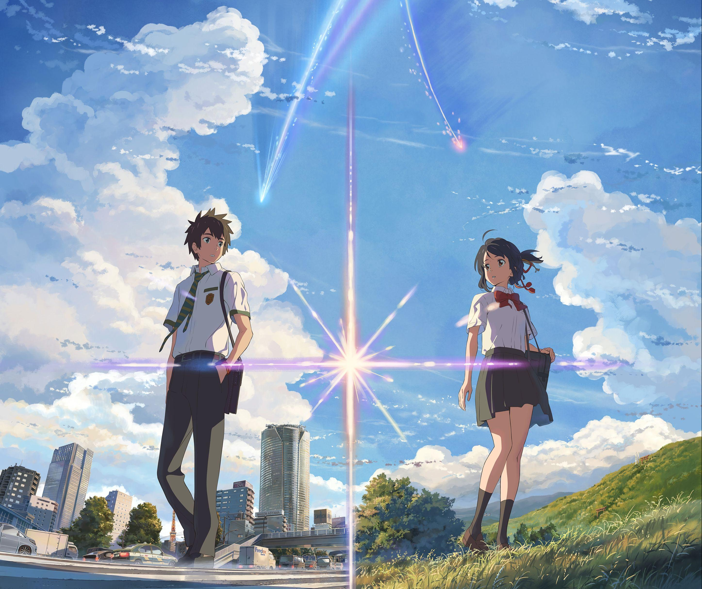

3 Rekomendasi Film Anime
Kimi no Na wa
Kimi no Nawa menceritakan tentang dua remaja yang bernama Mitsuha Miyamizu dan Taki Tachibana yang saling bertukar tubuh satu sama lain. Awalnya mereka tidak menyadari pertukaran tubuh itu, mereka menganggapnya hanya mimpi semata. Tetapi orang-orang sekitar mengatakan kepada keduanya mengenai keanehan di diri mereka, belum lagi kejadiannya terjadi lebih dari 3 kali. Sehingga mau tidak mau mereka pun percaya. Setelah saling menyadari keadaan satu sama lain, Taki dan Mitsuha sepakat untuk mencatat keseharian mereka dan menyampaikan hal-hal apa saja yang tidak boleh dilakukan satu sama lain agar tidak dicurigai oleh orang-orang sekitar.
Selama bertukar tubuh itu, mereka merasa terikat satu sama lain, bahkan tanpa sadar Mitsuha jatuh cinta kepada Taki. Mitsuha pun dengan penuh keyakinan menyusul Taki. Melakukan perjalanan menggunakan kereta dari Desa Itomori ke Tokyo. Tetapi apa yang Mitsuha dapatkan di sana membuat ia sakit hati. Taki tidak mengenali nya sama sekali. Hingga akhirnya dengan nekad ia memberikan ikat rambut berwarna merah miliknya kepada Taki yang kemudian dipakai menjadi gelang azimat oleh lelaki itu. Dari sisi Taki sendiri setelah ia menyadari pertukaran tubuhnya dengan Mitsuha, ia berencana menemui gadis itu di Desa Itomori. Tetapi yang ia dapatkan di sana hanyalah sebuah desa yang telah porak poranda akibat bencana meteor jatuh pada 3 tahun yang lalu. Barulah ia sadar bahwa ia melakukan pertukaran tubuh dengan gadis yang sudah tiada. Tetapi, Taki tidak ingin menyerah, ia berusaha mengingat-ngingat apapun petunjuk yang bisa membawanya kepada Mitsuha hingga akhirnya dia nekat untuk pergi ke gunung tempat makam keluarga Miyamizu. Di sana ia meminum sake yang dibuat oleh Mitsuha sebagai persembahan. Dari sinilah mereka akan bertemu kembali ketika Kataware-doki.
Koe no Katachi

Menceritakan tentang Nishimiya Shouko murid SD pindahan dan gadis dengan keterbatasan, berkebutuhan khusus yaitu seorang Tuna Rungu. Karena hal tersebut, ada beberapa murid yaitu teman sekelas Shouko termasuk Ishida Shouya melalukan Bullying terhadapnya. Semakin hari semakin parah Bullying yang dilakukan oleh Ishida terhadap Shouko. Namun tidak lama setelah ia melakukan Bullying terhadap Shouko, Ibu Shouko memindahkan Shouko ke sekolah lain. Dan dalam anime ini, diperlihatkan bahwa Karma itu berlaku! Ishida akhirnya mengalami Bullying oleh teman-teman ia sendiri. Dalam Movie tunggal anime Koe no Katachi, waktu dipercepat setelah dan langsung masuk ke fase dimana Ishida dan Shouko sudah beranjak dewasa dan duduk dibangku SMA.
Karena pengalaman buruk yang dilakukan Ishida terhadap Shouko dan juga pengalaman Bullying yang ia alami, Ishida menjadi orang yang susah mendapatkan teman dan malah menjadi seorang Introvert dengan rasa bersalahnya terhadap Shouko. Dan saat ia masuk ke sebuah SMA, ia bertemu kembali dengan Nishimiya Shouko, pertemuan yang membuat ia akhirnya bisa menebus kesalahan dan dosa yang pernah ia lakukan terhadap Shouko.
Kimi no Suizou wo Tabetai

Anime yang dalam bahasa Inggrisnya berjudul Let Me Eat Your Pancreas ini, bercerita tentang seorang anak muda yang suka menghabiskan waktunya untuk membaca buku, dibanding bersosialisasi dengan orang-orang disekitarnya. Oleh sebabnya, ia selalu dipandang rendah dan menjijikan bagi kebanyakan teman-teman sekelasnya. Pada suatu hari di rumah sakit, pemuda itu menemukan sebuah buku catatan yang tergeletak. Karena ia pada dasarnya menyukai buku, ia pun mengambil buku tersebut. Kemudian iapun membuka dan membaca buku tersebut, lantaran penasaran. Namun siapa sangka, buku itu ternyata buku harian milik seseorang yang mengidap penyakit pankreas. Ia adalah Sakura, seorang siswi cantik yang juga merupakan teman sekelas pemuda tersebut.
Sakura yang melihat pemuda itu membaca bukunya, membuat permohonan agar pemuda itu tidak mengatakan apapun tentang penyakit pankreasnya kepada teman-temannya. Hal ini Sakura lakukan agar teman-temannya tidak sedih dan panik. Pemuda itupun menyetujuinya, karena baginya itu bukanlah suatu masalah besar untuk dirinya pribadi. Dibanding itu, pemuda itu juga tidak memiliki teman. Jadi iapun ragu mau mengatakannya kepada siapa? Nah, dari sinilah kisah mereka berdua dimulai. Akan ada banyak momen-momen yang tak terlupakan, dan juga akan ada benih-benih cinta yang membuat kamu merasa bergetar-getar.